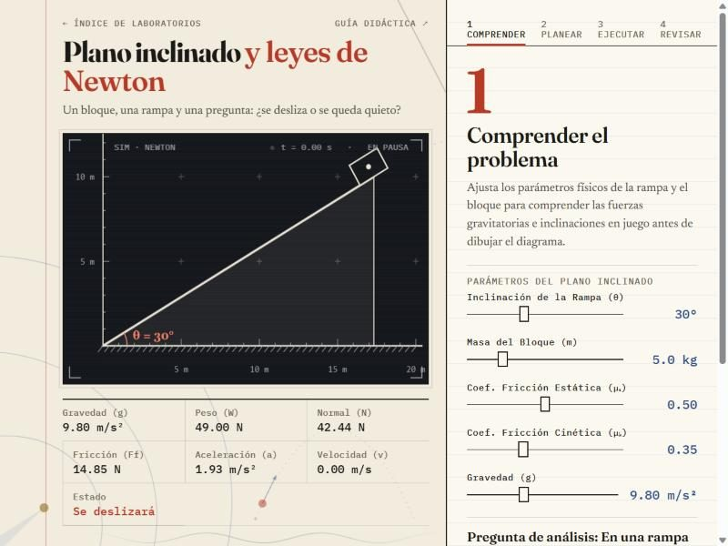
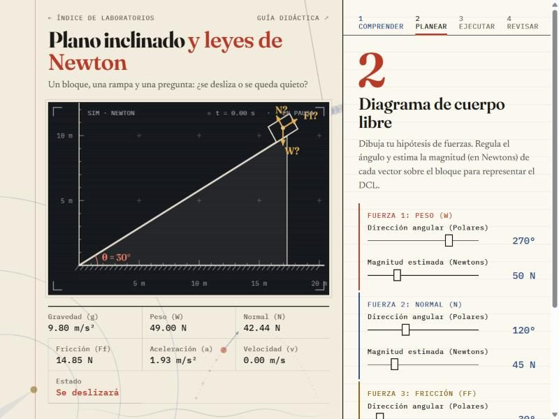
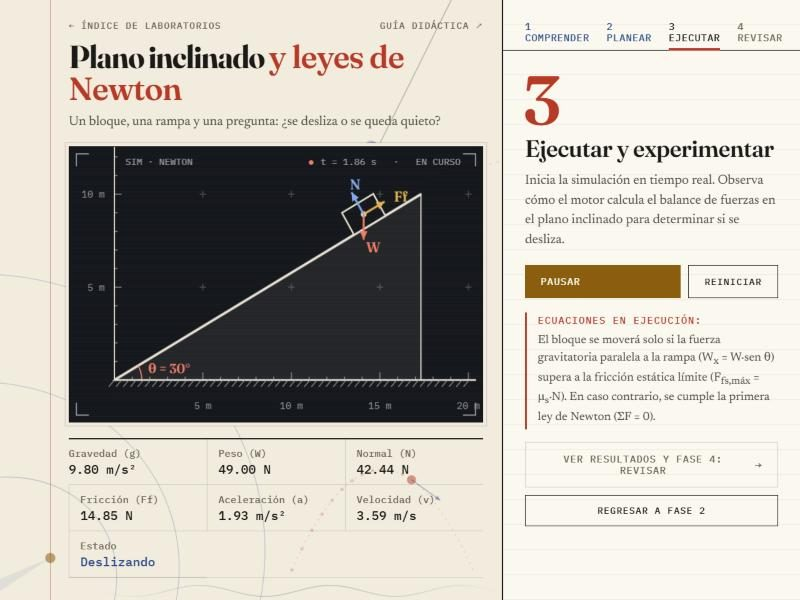
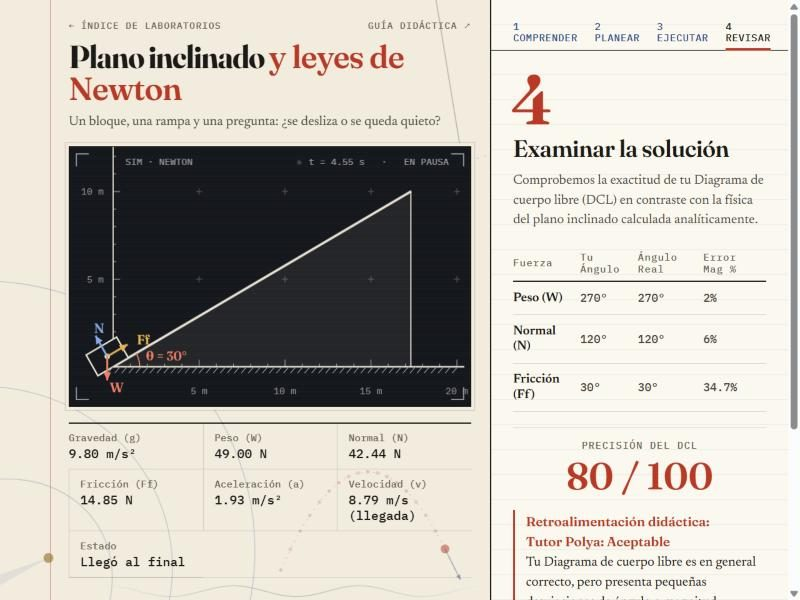

Plano inclinado y leyes de Newton
Guía didáctica del estudiante · método de Pólya · Física — UNIR
Un bloque, una rampa y una pregunta: ¿se desliza o se queda quieto? Esta guía te ayuda a modelar las fuerzas de gravedad, contacto y rozamiento sobre un bloque apoyado en una rampa, con las fases heurísticas de George Pólya y la investigación del profesor Marcos Chacón Castro.
Dinámica en un plano inclinado
La dinámica estudia las causas del movimiento a partir de las fuerzas. En un plano inclinado un ángulo θ, con rozamiento, actúan tres fuerzas sobre el bloque.
1. Peso (W)
Es la atracción de la Tierra sobre el bloque de masa m. Apunta siempre verticalmente hacia abajo (ángulo polar 270°). Por la inclinación, se descompone en un eje paralelo y otro perpendicular a la rampa:
Wx = W·sen θ (paralela a la rampa, tiende a hacerlo bajar)
Wy = W·cos θ (perpendicular, lo presiona contra la rampa)
2. Fuerza normal (N)
Es la reacción de la superficie. Apunta perpendicular a la rampa, hacia arriba (ángulo polar θ + 90°). Por equilibrio en el eje perpendicular:
3. Fricción o rozamiento (Ff)
Se opone al deslizamiento: es paralela a la rampa y apunta hacia arriba (ángulo polar θ).
- Fricción estática máxima: el límite antes de romper el reposo, Ffs,máx = μs·N.
- Equilibrio, si Wx ≤ Ffs,máx: el bloque no se mueve y la fricción real es exactamente igual a la componente impulsora, Ff = Wx.
- Dinámica, si Wx > Ffs,máx: el bloque acelera rampa abajo con fricción cinética constante, Ff = μk·N, y a = g·(sen θ − μk·cos θ).
Comprender el problema
Familiarízate con las variables de la rampa antes de dibujar nada: el ángulo θ, la masa m, los coeficientes de rozamiento μs y μk y la gravedad g.

En tu cuaderno · variables y fuerzas
| Magnitud | Fórmula | Tu resultado |
|---|---|---|
| Peso | W = m·g | N |
| Componente paralela | Wx = W·sen θ | N |
| Normal | N = W·cos θ | N |
| Fricción estática máxima | μs·N | N |
Compara Wx con la fricción estática máxima. Sin simular, ¿se deslizará el bloque? Comprueba tu respuesta con la lectura «Se deslizará» de la tira de datos.
Concebir un plan
Formula tu hipótesis de fuerzas: diseña el diagrama de cuerpo libre (DCL) regulando, para cada fuerza, su dirección polar y su magnitud en newtons.

Cómo orientar los vectores del DCL
| Fuerza | Ángulo polar | Magnitud |
|---|---|---|
| Peso (W) | 270° (vertical, hacia abajo) | m·g |
| Normal (N) | θ + 90° (perpendicular a la rampa) | W·cos θ |
| Fricción (Ff) | θ (paralela, hacia arriba) | W·sen θ en equilibrio; μk·N si desliza |
Los ángulos polares se miden desde la derecha (0°) y crecen en sentido antihorario.
Ejecutar el plan
Inicia el experimento y observa si las fuerzas producen movimiento o equilibrio. La tira de datos cambia de «Se deslizará» a «Deslizando» o «Equilibrio estático» según la física.

- Si Wx supera la fricción estática máxima, el bloque acelera con a = g·(sen θ − μk·cos θ).
- Si no, se cumple la primera ley de Newton: ΣF = 0 y el bloque permanece en reposo.
- Al llegar al final de la rampa (20 m), la tira de datos conserva la velocidad de llegada v = √(2·a·L) y el estado pasa a «Llegó al final».
En tu cuaderno · dinámica
| Magnitud | Tu predicción | Lectura del simulador |
|---|---|---|
| ¿Se mueve? | ||
| Aceleración a (m/s²) | ||
| Velocidad de llegada v (m/s) | ||
| Fricción real Ff (N) |
Examinar la solución
Comprueba la exactitud de tu DCL frente a la física del plano calculada analíticamente.

Cada fuerza se califica por separado: correcta, con advertencia (más de 5° o un 10 % de error) o incorrecta (más de 10° o un 20 %). Si te equivocas —por ejemplo, apuntando el peso en la dirección de la rampa—, el Tutor Pólya te ayuda a identificar el error de modelación vectorial.
Conclusiones esperadas
- El peso siempre es vertical; la normal siempre es perpendicular a la superficie; el rozamiento siempre es paralelo a ella.
- La normal no es igual al peso en un plano inclinado: N = W·cos θ.
- Mientras Wx no supere μs·N, la fricción estática se ajusta exactamente a Wx.
- Una vez que desliza, la fricción cinética es constante y la aceleración no depende de la masa.
¿Qué pasa con el ángulo crítico de deslizamiento si duplicas la masa? Deduce una fórmula para el ángulo en el que el bloque empieza a deslizarse en función de μs.